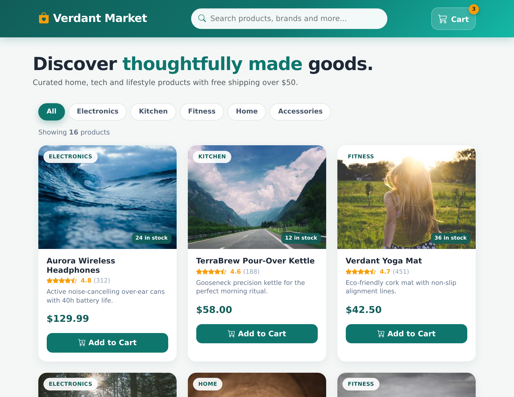

Build a local-first full-stack product catalog using AI-DLC methodology
Stack: React / Vite / FastAPI / SQLite / Docker Compose
Apply AI-DLC methodology to build a local-first e-commerce product catalog. Customers can browse products, search, view details, and add items to a SQLite-backed cart. Admins can manage products and inventory without login. Product images use static placeholder image URLs.
venv, and pipWe have just been hired by a new client to build the online store they keep talking about. They know retail, not software, so the details are fuzzy. Here is what they have told us so far:
“We want a little online shop where customers can look through everything we sell, search for what they want, and open a product to see the details before dropping it into a cart. On our side, we need to be able to add and update the products and keep an eye on what's in stock. That's the gist of what we need for now.”
You kick off the entire workflow with a single prompt describing what you want to build. AI-DLC Workflow takes it from there.
Open a new chat and type:
Using AI-DLC, build a local-first e-commerce product catalog using React, Vite, FastAPI, SQLite, and Docker Compose for Operations packaging. Customers can browse products, search, view details, and add items to a SQLite-backed cart. Admins can manage products and inventory without login. Use static placeholder image URLs.
AI-DLC Workflow activates, displays a welcome message, scans your workspace, sets up aidlc-docs/, and proceeds to the next stage.
The AI analyzes your request and asks clarifying questions about anything unclear. You'll also see a question about enabling security extension rules.
When the AI presents the questions file: Open it, fill in your [Answer]: tags. For the security extension question, answer "No" since this is a prototype. Then tell the AI:
I have answered the clarification questions. Please re-read the file and proceed.
The AI may ask follow-up questions. Once resolved, it generates a requirements document.
The AI creates user stories that become the contract for what gets built. It runs in two parts: first it plans how to structure the stories, then it generates them with personas and acceptance criteria.
Part 1 — Planning: The AI creates a story generation plan with questions. Open the plan file, fill in your answers, then tell the AI you're done.
Part 2 — Generation: The AI executes the plan step by step, marking checkboxes as it goes.
Go to aidlc-docs/aidlc-state.md, find the first unchecked item, then go to the corresponding plan file and resume from that point. For shorter workshops, you can skip this and continue in the same chat.The AI determines which Construction stages to run and decomposes the system into multiple units that can be built independently. Units are ordered so everything is built properly.
If you want local packaging and Local Packaging is marked SKIP:
Add Local Packaging to the plan. We need backend and frontend Dockerfiles, docker-compose.yml, .env.example, SQLite persistence, and a local deployment guide for the Operations step.
AI-DLC Workflow designs the detailed component model — all components, data models, APIs, and how they interact. No code yet.
The main build activity. AI-DLC Workflow's Construction phase has a built-in per-unit loop — for each unit of work, it runs design and code generation stages in sequence, completing each unit fully before moving to the next. The approval gate after each unit says "Continue to next unit" or "Proceed to Build & Test." This is less explicit than a manual tracker (like the one in the Copy-Paste Prompts tab), but the workflow handles the cycling automatically.
Part 1 — Planning: The AI creates a code generation plan with numbered, checkboxed steps.
Part 2 — Generation: The AI implements each unit, tests it, validates integration, and marks it complete before moving to the next.
The AI packages the local full-stack application for repeatable Operations use. This covers:
docker-compose.yml exposing the backend at http://localhost:8000 and frontend at http://localhost:3000./data/catalog.db.env.example, local deployment guide, and validation reportAI-DLC Workflow generates build and test instructions. Verify the local application works end-to-end.
cd backend python3 -m venv .venv source .venv/bin/activate python -m pip install -r requirements.txt uvicorn app.main:app --reload --host 0.0.0.0 --port 8000
cd frontend npm install npm run build npm run preview -- --host 0.0.0.0
Validate the API at http://localhost:8000/docs, the frontend at http://localhost:4173, and the Docker Compose packaged frontend at http://localhost:3000.
AI-DLC Workflow's Operations phase is a placeholder for future expansion. This is a group discussion.
Discuss as a group:
Now that we've built and packaged our product catalog, discuss how AI would help with: 1. Backing up and restoring the SQLite product catalog 2. Resetting seed data safely during local development 3. Adding analytics for popular products 4. Migrating from SQLite to PostgreSQL or hosted infrastructure later Please explain how this would work for our specific application.
[Answer]: tags, then tell the AI to re-read.aidlc-state.md. For short workshops, you can often skip this.aidlc-state.md to see where you are at any point.We will work on building an application today. For every front end and backend component we will create a project folder. All documents will reside in the aidlc-docs folder. Throughout our session I'll ask you to plan your work ahead and create an md file for the plan. You may work only after I approve said plan. These plans will always be stored in aidlc-docs/plans folder. You will create many types of documents in the md format. Requirement, features changes documents will reside in aidlc-docs/requirements folder. User stories must be stored in the aidlc-docs/story-artifacts folder. Architecture and Design documents must be stored in the aidlc-docs/design-artifacts folder. All prompts in order must be stored in the aidlc-docs/prompts.md file. Confirm your understanding of this prompt. Create the necessary folders and files for storage, if they do not exist already.
Intent:
✏️ TODO: fill in your application description below
Use React, Vite, FastAPI, SQLite, and Docker Compose for Operations packaging. Persist products, inventory, and cart data in SQLite. Admin management has no login. Product images use static placeholder image URLs.
Do not propose solutions yet.
Acknowledge the intent and confirm understanding.Your Role: You are an expert product manager with e-commerce domain expertise. Before you start the task as mentioned below, please do the planning and write your steps in the aidlc-docs/plans/user_stories_plan.md file with checkboxes against each step in the plan. List your Deliverables in the plan. If any step needs my clarification, please add it to the step to interact with me and get my confirmation. Do not make critical decisions on your own. Once you produce the plan, ask for my review and approval. After my approval, you can go ahead to execute the same plan one step at a time. Once you finish each step, mark the checkboxes as done in the plan.
Your Task: Build comprehensive user stories for the product catalog system based on the intent. Include customer-facing features (browsing, search, cart) and admin features (product management, inventory).
Also include this additional feature: ✏️ TODO: describe your additional feature here
Write the user stories to aidlc-docs/story-artifacts/user_stories.mdI reviewed the plan. Please proceed with the approved approach.aidlc-docs/story-artifacts/user_stories.md and review what it produced.
Your Role: You are an experienced software architect. Before you start the task as mentioned below, please do the planning and write your steps in the aidlc-docs/plans/units_plan.md file with checkboxes against each step in the plan. If any step needs my clarification, please add it to the step to interact with me and get my confirmation. Do not make critical decisions on your own. Once you produce the plan, ask for my review and approval. After my approval, you can go ahead to execute the same plan one step at a time. Once you finish each step, mark the checkboxes as done in the plan. Your Task: Group the user stories in aidlc-docs/story-artifacts/user_stories.md into multiple units that can be built independently. Each unit contains highly cohesive user stories that can be built by a single team. The units are loosely coupled with each other. For each unit, write the respective user stories and acceptance criteria. Write the units to aidlc-docs/story-artifacts/units.md
aidlc-docs/story-artifacts/units.md and compare it against aidlc-docs/story-artifacts/user_stories.md.
user_stories.md, then count them across the units. Find any story that got dropped or silently merged during grouping.Your Role: You are an experienced software architect and engineer. Before you start the task as mentioned below, please do the planning and write your steps in the aidlc-docs/plans/domain_model_plan.md file with checkboxes against each step in the plan. List your Deliverables in the plan file. If any step needs my clarification, please add it to the step to interact with me and get my confirmation. Do not make critical decisions on your own. Once you produce the plan, ask for my review and approval. After my approval, you can go ahead to execute the same plan one step at a time. Once you finish each step, mark the checkboxes as done in the plan. Your Task: Design the domain model to implement all the user stories. This model shall contain all the React components, FastAPI routes, SQLite data models, repositories, APIs, and how the components interact to implement the user stories. The components should be at a business level, do not generate any code yet. Write the domain model into aidlc-docs/design-artifacts/domain_model.md
aidlc-docs/design-artifacts/domain_model.md and review the domain model the AI designed — no code has been written yet, only structure.
Your Role: You are an experienced software engineer. Your Task: 1. Review the units in aidlc-docs/story-artifacts/units.md 2. Create a file aidlc-docs/plans/unit_implementation_tracker.md with: - Total number of units - List of all units with checkboxes (unchecked) - Suggested implementation order Format: # Unit Implementation Tracker Total Units: X ## Implementation Order - [ ] Unit 1: [Name] - [Brief description] - [ ] Unit 2: [Name] - [Brief description] - [ ] Unit 3: [Name] - [Brief description] ... Show me the tracker file.
Your Task: Look at aidlc-docs/plans/unit_implementation_tracker.md and implement the next unchecked unit. 1. Implement ONLY that unit from aidlc-docs/story-artifacts/units.md 2. Refer to the domain model in aidlc-docs/design-artifacts/domain_model.md 3. Build SQLite data models/repositories, FastAPI routes, and React components for this unit as needed 4. Ensure all previously implemented units still work 5. Mark the unit as complete in the tracker by checking the checkbox Tell me which unit you're implementing before you start.
Test the unit you just implemented: 1. Test this unit's functionality 2. Test integration with all previous units 3. Verify all user stories in this unit work Show me: - Test results - Updated tracker showing this unit checked off - How many units remain Fix any issues before proceeding to the next unit.
Your Task: All units in aidlc-docs/plans/unit_implementation_tracker.md should now be checked off. Run comprehensive end-to-end tests. Test: 1. All units work independently 2. All integrations work correctly 3. Complete user flows work end-to-end 4. All user stories are satisfied Show me complete test results and the final tracker with all units checked.
Your Role: You are an experienced platform engineer. Before you start the task as mentioned below, please do the planning and write your steps in the aidlc-docs/plans/deployment_plan.md file with checkboxes against each step in the plan. List your Deliverables in the plan file. If any step needs my clarification, please add it to the step to interact with me and get my confirmation. Do not make critical decisions on your own. Once you produce the plan, ask for my review and approval. After my approval, you can go ahead to execute the same plan one step at a time. Once you finish each step, mark the checkboxes as done in the plan. Your Task: Package the local-first React + FastAPI + SQLite product catalog for the Operations step. Do not require AWS services, AWS credentials, CloudFormation, or any cloud account. Create: - backend/Dockerfile for the FastAPI service - frontend/Dockerfile or Nginx static container for the React build - docker-compose.yml exposing backend at http://localhost:8000 and frontend at http://localhost:3000 - .env.example - persistent SQLite storage under ./data/catalog.db - DEPLOYMENT/local-deployment-guide.md - DEPLOYMENT/validation-report.md Requirements: - Backend API docs work at http://localhost:8000/docs - Frontend works at http://localhost:3000 when packaged - Product, inventory, and cart data persist in SQLite - Include commands for docker compose up --build, docker compose ps, docker compose logs, and docker compose down - Validate customer browse/search/detail/cart flows and admin product/inventory flows - Review the validation report and fix all identified issues, then update the validation report
Your Role: You are an experienced platform engineer. Before you start the task as mentioned below, please do the planning and write your steps in the aidlc-docs/plans/deployment_plan.md file with checkboxes against each step in the plan. List your Deliverables in the plan file. If any step needs my clarification, please add it to the step to interact with me and get my confirmation. Do not make critical decisions on your own. Once you produce the plan, ask for my review and approval. After my approval, you can go ahead to execute the same plan one step at a time. Once you finish each step, mark the checkboxes as done in the plan. Your Task: Package the local-first React + FastAPI + SQLite product catalog for the Operations step. I do not have Docker, so do not use Docker, docker-compose, or containers at all. Do not require AWS services, AWS credentials, CloudFormation, or any cloud account. Create: - .env.example - persistent SQLite storage under ./data/catalog.db - DEPLOYMENT/local-deployment-guide.md - DEPLOYMENT/validation-report.md Requirements: - Run the backend directly with a Python virtual environment (python -m venv, pip install -r requirements.txt) and uvicorn on http://localhost:8000, with API docs at http://localhost:8000/docs - Build and serve the frontend without Docker using npm install, npm run build, and npm run preview on http://localhost:4173 - Product, inventory, and cart data persist in SQLite under ./data/catalog.db - The deployment guide must include the exact commands to set up, run, and stop both the backend and frontend, for both macOS/Linux and Windows PowerShell - Validate customer browse/search/detail/cart flows and admin product/inventory flows - Review the validation report and fix all identified issues, then update the validation report
Now that we've built and packaged our product catalog, let's discuss the Operations Phase. Based on what we've created, how would AI help with: 1. Backing up and restoring the SQLite product catalog 2. Resetting seed data safely during local development 3. Adding analytics for popular products 4. Migrating from SQLite to PostgreSQL or hosted infrastructure later Please explain how this would work for our specific application.
Earlier, one of our engineers followed the exact same steps you just did and created this prototype. In what ways are the two apps similar and different? Where could the differences have crept in?
